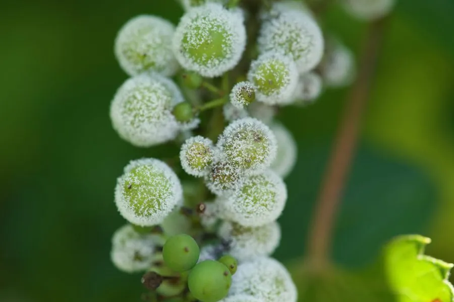

真菌 · 真菌界
葡萄生单轴霉 Plasmopara viticola

引起葡萄霜霉病的卵菌，孢子囊借风雨传播，叶背长出白色霉层，是葡萄园多雨季节重点防治的病害。
- 分类
- 门卵菌门纲卵菌纲目霜霉目科霜霉科属单轴霉属
- 栖息环境
- 葡萄的叶片和果实，多雨潮湿、通风不良时易流行
- 地理分布
- 全球葡萄产区广泛分布，中国各葡萄产区均有发生
- 保护级别
- 暂无评估（植物病原菌，非保护对象）
物种志
葡萄生单轴霉是卵菌门霜霉目的专性寄生菌，菌丝在葡萄叶片细胞间生长，靠吸器从寄主细胞吸取营养。孢子囊梗从气孔伸出，分枝上着生柠檬形的孢子囊，借风雨传播；有性世代产生卵孢子，在病叶残体中越冬。
葡萄生单轴霉是葡萄霜霉病的病原菌，原产于北美，19 世纪随葡萄引种传入欧洲，曾给欧洲葡萄园造成巨大损失。病叶正面出现黄色斑块，叶背长出白色霜状霉层，严重时叶片干枯、果实受害。该病在多雨潮湿、通风不良的葡萄园中容易流行。防治以清除病叶、改善通风、合理修剪和适时喷药为主，是葡萄园多雨季节重点防治的病害；卵孢子可在落叶中存活并成为翌年的初侵染源。
形态与习性
- 分类卵菌门霜霉目霜霉科单轴霉属，并非真正的真菌
- 菌丝在叶片细胞间生长，靠吸器吸取营养
- 孢子柠檬形孢子囊借风雨传播，卵孢子越冬
- 寄主葡萄的叶片和果实
- 病害霜霉病，叶背长出白色霜状霉层
- 防控清除病叶、改善通风、合理修剪和适时喷药
趣味知识
- 葡萄生单轴霉是卵菌，不属于真正的真菌。
- 病叶背面会长出白色霜状霉层，是霜霉病的典型症状。
- 它原产北美，19 世纪传入欧洲后曾给葡萄园造成巨大损失。